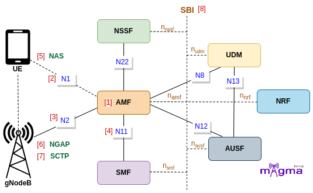

Access and Mobility Management Function [1]¶
AMF(Access and Mobility Management Function) is a Control Plane(CU) function in the 5G Core Network(CN). gNodeB first needs to connect with AMF to access any 5G services. AMF is the only Network Function(NF) through which gNB communicates with the 5G Core(excluding interaction with the UPF(User Plane Function) during the PDU Session Establishment).
Interface¶
N1 [2]¶
AMF retrieves all the connection and session-related information from the UE over the N1 interface.
N2 [3]¶
UE-associated and non-UE-associated communication between AMF and gNodeB take place over this interface.
N8¶
Policy rules both for all users and for particular UEs, session-related subscription data, subscriber data, and any other information(e.g. data exposed to the third-party application) is stored in UDM which AMF retrieves over the N8 interface.
N11 [4]¶
The N11 interface represents a trigger to add, modify or delete a PDU session by AMF across the User Plane.
N12¶
N12 emulates AUSF within the 5G Core offering services to the AMF via the AUSF service-based N12 interfaces. The 5G network represents the service-based interface, with a focus on the AUSF and AMF.
N22¶
AMF selects the best Network Functions (NF) across the network with the help of NSSF. NSSF provides the network functions location to the AMF over the N22 interface.
Protocols¶
NAS [5]¶
The 5G NAS(Non-Access Stratum) is a control plane protocol that is present at the radio interface(N1 interface) between UE and AMF. This manages the mobility and session-related context within 5GS(5G System).
NGAP [6]¶
The Next-Generation Application Protocol(NGAP) is a Control Plane(CP) protocol signaling between gNB and the AMF. It handles the UE-associated and non-UE-associated services.
Call Flow¶
Registration and Deregistration¶
AMF first needs to register with the NRF to identify the Network Function locations and communicate with them. When the UE powers ON, it undergoes a registration process. AMF handles the registration procedure, then accepts the initial NAS UE message and the registration request. This message is needed to create an AMF identity for the UE.
Then, it checks for the last AMF with which the UE is registered. And if it succeeds to find the old AMF address, the new AMF retrieves all the UE context, and a deregistration procedure is initiated against the old AMF. The old AMF requests for the release of SM context from the SMF and also requests for the release of UE context from the gNB.
[5] Process data to obtain NRF info
[1] Registering with NRF
[1] Handle an NF status notification from NRF
[10] Registration Type
[4] Run mobility/periodic registration update procedure
[4] Decode registration request
[4] Handle registration request
[4] Registration reject response message
[4] Initialize registration accept
[4] Run registration procedure
[4] Handle UE registration state change
[6] Received Initial UE message
[6] Handle Initial UE message
[6] Get NAS context
[4] Received integrity and ciphered NAS messages
[4] Store NAS information in the NAS context
[4] Find UE context
[4] Checking for the NAS context with GUTI, AMF UE NGAP ID
[4] Handle UE-initiated deregistration process
[1] Delete event subscription
[1] Handle event exposure delete/unsubscribe
[1] Trigger N11 Deregistration Request
[6] Handle PDU session resource release
[6] Handle UE context release request
[6] handling UE context release command
[6] Send UE release command to source gNB
[6] Handle UE context release complete
[6] Delete gNB context
[6] Remove UE context
Authentication and Authorization¶
If the new AMF didn’t get any traces of the old AMF, then it starts an authorization and authentication procedure with the UE. It handles the identification process and asks for the authentication vectors from the AUSF. Then, it sends an authentication request to the UE to setup security keys and select security algorithms in the channels to make them secure for the transfer of the data.
AMF controls all the NAS DL/UL transport channels for communication.
[4] Check existing identification procedure
[1] Generate 5g GUTI
[9] Set 5G GUTI
[2] Configure GUAMI
[9] Set SUCI with SUPI IMSI
[9] Set IMEISV
[1] Check UE context with 5g-S-TMSI, if not available create a new one with RAN AMF ID
[2] Configure PLMN list
[6] Set PLMN support list
[6] Verify PLMN
[4] Set GUTI, AMF UE NGAP ID to NAS context
[1] Set SUPI, AMF UE NGAP ID, and RAN AMF ID to UE context
[4] Handle Identity response
[2] Configure AUSF
[4] Check ongoing authentication procedure
[4] Start authentication procedure
[4] Handle authentication failure
[4] AKA confirmation from AUSF
[2] Configure integrity/ciphering algorithm
[4] Get Authentication vectors from AUSF or generate them locally
[4] Authentication vector generator in UDM
[4] Handle authentication response
[4] Handle authentication vector successful result
[4] Encode NAS message protected
[4] Handle NAS UL and DL Transport messages
[4] Check security header type
[4] Start security mode control procedure
[4] Select security algorithm
[6] Security context
[4] Handle security mode reject
[4] Handle Security mode complete
User Plane Setup¶
AMF retrieves all the AM subscription data from the UDM and requests the NSI(Network Slice Instances) information from the NSSF to get the information about the SMF. Then, it sends an SM context setup request to the SMF to establish a default PDU session. After that, it authenticates the session and bearers to avoid data leakage. On the completion of the user plane setup procedure, AMF generates an AMF UE identity for the UE.
[12] Handle Access Mobility subscription data retrieval
[5] Get NSI information from NSSF
[5] Discover SMF from NSI info
[5] Discover SMF
[5] SMF selection from configuration
[5] Handle PDU Session Create SM Context
[11] Add/Get/find PDU session context
[5] Create PDU session context if not available
[5] Send notification for the subscribed events
[5] Handle PDU session initial request
[5] Handle PDU session establishment request
[4] send DL NAS buffer task N2
[5] Send UE authentication request
[1] Generate/Update AMF UE NGAP ID
[1] Generate AMF profile
Context Setup and Session Modification¶
After creating an AMF UE identity for the UE, AMF shares security capabilities, SMC messages, and registration acceptance messages under the initial context setup request with the gNB and UE.
In the session modification request, AMF sends the updated session management resources to the SMF. The AMF also initiated a session establishment request at the gNB level.
[6] Handle initial context setup request
[4] Get UE security capability
[6] Encode initial context setup request
[4] Send Initial Context Setup Request
[6] Handle initial context setup response
[4] Handle SMC messages
[3] Subscribe to UE Registration Status
[4] Registration complete handle
[4] Handle registration response
[4] Handle Service Request
[5] Send PDU session update SM context request
[6] Send PDU session Update SM context request to SMF
[6] Get NSSAI from the PDU session context
[6] Received modification of PDU Session Resource request
[6] Handle PDU session resource modify
[6] Encode PDU session resource setup request
[4] Get the PDU session to be activated
[6] Handle PDU Session resource procedure
[5] Store corresponding info in the PDU session context
[6] Encode DL NAS transport message
Handover Procedure¶
AMF sends a paging request to the gNB. During the handover procedure, gNB sends a handover notification to the AMF as UE changes the RAN area. It sends the handover messages to the source gNB to direct the remaining resources from the other gNB. AMF also sends the handover request message to the target gNB for the continuation of data flow.
[6] Handle paging message
[4] Handle NAS signaling establishment request(create or update NAS context)
[1] Handle NAS signaling establishment message
[6] handle UL/DL NAS transport message
[6] Handling Handover required
[6] Handle handover Notify
[6] Handover request message to be sent to target gNB
[6] Send handover command message to source gNB
[6] Handling handover requests ACK
[6] Send handover preparation failure
[4] Set 5G MM state
[4] Set 5G CM state
[4] Handle UE location change
[3] Subscribe UE location report
[3] UE reachability status
[4] Handle UE reachability status change
[4] Handle UE connectivity state change
[7] Update UE info
[7] Update 5g MM state